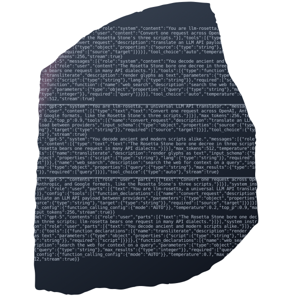
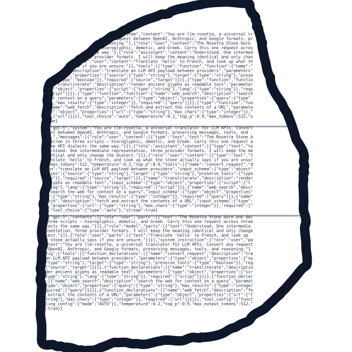
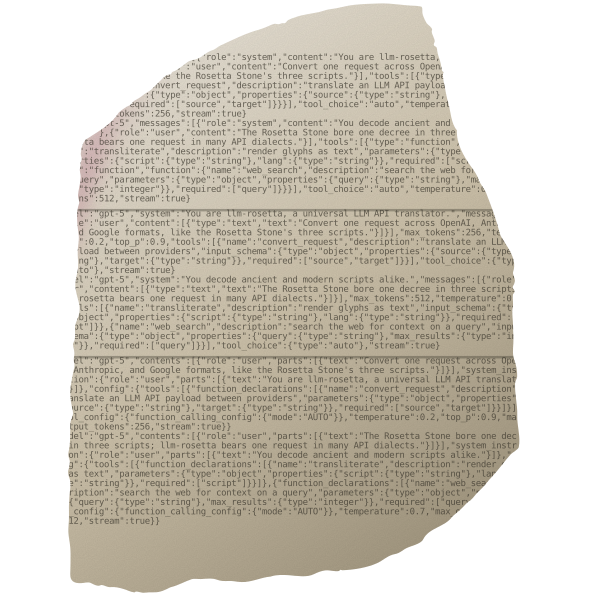

The inscription is real: the same request body in three API dialects (OpenAI Chat / Anthropic Messages / Google GenAI), carved as three scripts — exactly what the real Rosetta Stone does with hieroglyphic / demotic / Greek. From afar, texture; up close, an easter egg. Pure monochrome (no accent), real silhouette, pink vein + grain for material depth.


